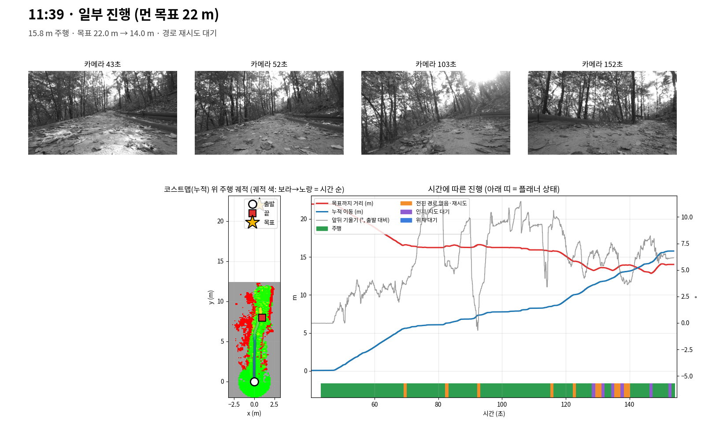

11/12 야지 #12 · 11:39 · 일부 진행 (먼 목표 22 m)
15.8 m 주행 · 목표 22.0 m → 14.0 m · 경로 재시도 대기
화면이 좁으면 가벼운 720p로 자동 재생 · 원본 화질로 보기
뒤로 밀린 구간
후진 기능이 없으므로 뒤로 간 것은 모두 미끄러짐. 차 앞 방향 기준 0.3 m 넘는 것만.
| 시각(주행 시작 기준) | 길이 | 밀린 거리 |
|---|---|---|
| 91.2~93.3초 | 2.1초 | 0.33 m |
| 129.6~131.6초 | 2.0초 | 0.35 m |
| 135.5~138.4초 | 2.9초 | 0.71 m |
| 147.5~150.8초 | 3.3초 | 1.20 m |
정합
2026-11-12 11:38 주행 · 대략(±1m) · 맵5 · 맵5는 정밀 주행이 없어 축척(휴대폰↔VIO)·위 방향(지면) 추정 ·
주행 카드

기록 파일: 20261112_113934_682207.nomad